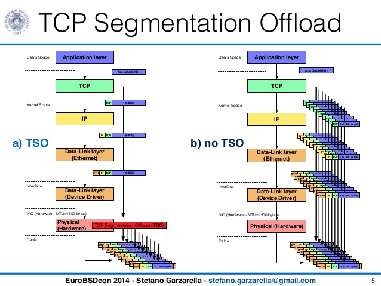
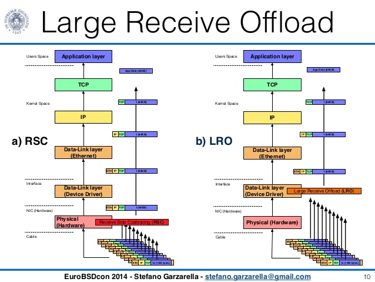

硬件加速与功能卸载
网卡硬件卸载功能
各种网卡支持的硬件卸载的功能:

DPDK提供了硬件卸载的接口，利用rte_mbuf数据结构里的64位的标识（ol_flags）来表征卸载与状态
接收时：

发送时：

VLAN硬件卸载
如果由软件完成VLAN Tag的插入将会给CPU带来额外的负荷，涉及一次额外的内存拷贝（报文内容复制），最坏场景下，这可能是上百周期的开销。大多数网卡硬件提供了VLAN卸载的功能。
接收侧针对VLAN进行包过滤
网卡最典型的卸载功能之一就是在接收侧针对VLAN进行包过滤，在DPDK中app/testpmd提供了测试命令与实现代码

DPDK的app/testpmd提供了如何基于端口使能与去使能的测试命令。
testpmd> vlan set strip (on|off) (port_id)
testpmd> vlan set stripq (on|off) (port_id,queue_id)
发包时VLAN Tag的插入
在DPDK中，在调用发送函数前，必须提前设置mbuf数据结构，设置PKT_TX_VLAN_PKT位，同时将具体的Tag信息写入vlan_tci字段。
多层VLAN
现代网卡硬件大多提供对两层VLAN Tag进行卸载，如VLAN Tag的剥离、插入。DPDK的app/testapp应用中提供了测试命令。网卡数据手册有时也称VLAN Extend模式。
IEEE588协议
DPDK提供的是打时间戳和获取时间戳的硬件卸载。需要注意，DPDK的使用者还是需要自己去管理IEEE1588的协议栈，DPDK并没有实现协议栈。
IP TCP/UDP/SCTP checksum硬件卸载功能
checksum在收发两个方向上都需要支持，操作并不一致，在接收方向上，主要是检测，通过设置端口配置，强制对所有达到的数据报文进行检测，即判断哪些包的checksum是错误的，对于这些出错的包，可以选择将其丢弃，并在统计数据中体现出来。在DPDK中，和每个数据包都有直接关联的是rte_mbuf，网卡自动检测进来的数据包，如果发现checksum错误，就会设置错误标志。软件驱动会查询硬件标志状态，通过mbuf中的ol_flags字段来通知上层应用。
Tunnel硬件卸载功能
目前DPDK仅支持对VxLAN和NVGRE的流进行重定向：基于VxLAN和NVGRE的特定信息，TNI或VNI，以及内层的MAC或IP地址进行重定向。
在dpdk/testpmd中，可以使用相关的命令行来使用VxLAN和NVGRE的数据流重定向功能，如下所示：
flow_director_filter X mode Tunnel add/del/update mac XX:XX:XX:XX:XX:XX vlan XXXX tunnel NVGRE/VxLAN tunnel-id XXXX flexbytes (X,X) fwd/drop queue X fd_id X
TSO

TSO（TCP Segment Offload）是TCP分片功能的硬件卸载，显然这是发送方向的功能。硬件提供的TCP分片硬件卸载功能可以大幅减轻软件对TCP分片的负担。

在dpdk/testpmd中提供了两条TSO相关的命令行：
tso set 14000：用于设置tso分片大小。tso show 0：用于查看tso分片的大小。
RSC

图片来源Software segmentation offloading for FreeBSD by Stefano Garzarella
RSC（Receive Side Coalescing，接收方聚合）是TCP组包功能的硬件卸载。硬件组包功能实际上是硬件拆包功能的逆向功能。硬件组包功能针对TCP实现，是接收方向的功能，可以将拆分的TCP分片聚合成一个大的分片，从而减轻软件的处理。